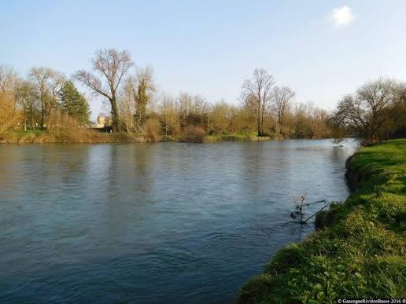

L'Adour, à la
frontière du GersFleuve limite occidentale


⟹ Sites Emblématiques ⟸
Né au col du Tourmalet dans les Hautes-Pyrénées, l'Adour est l'un des grands fleuves du Sud-Ouest. Après sa confluence avec l'Arros, son principal affluent de rive droite, il opère un virage vers l'ouest et vient border tout l'ouest du département du Gers avant de poursuivre sa route vers les Landes, à hauteur d'Aire-sur-l'Adour.

Sur ce tronçon, le fleuve marque le passage entre la Bigorre et la Gascogne, dans un territoire connu sous le nom de Rivière-Basse. Le bassin versant de l'Adour couvre 23 % de la superficie du Gers, à l'ouest du département, quand le reste des eaux gersoises rejoint la Garonne via le système Neste et rivières de Gascogne.
Autrefois flotté pour le transport du bois et des marchandises, l'Adour a longtemps rythmé la vie des villages riverains comme Riscle ou Aignan, avant que le rail et la route ne prennent le relais au XXe siècle.
L’Adour appartient à un vaste bassin hydrographique tourné vers l’Atlantique. Dans l’ouest gersois, son fonctionnement contraste avec celui des rivières de Gascogne orientées vers la Garonne : ses crues, ses bras secondaires et ses zones d’expansion façonnent une vallée plus large, où l’eau a longtemps commandé l’implantation des cultures, des chemins et des villages.
La vallée conserve un vocabulaire paysager très caractéristique. Les « saligues » désignent les formations végétales des bancs et bras du fleuve, dominées notamment par les saules, tandis que les « barthes » correspondent aux prairies et terres basses régulièrement soumises aux débordements. Ces espaces jouent un rôle important dans l’écrêtement naturel des crues et constituent des corridors écologiques.
Le fleuve reste aussi un enjeu contemporain de gestion de l’eau. Les épisodes d’étiage et de sécheresse peuvent entraîner des restrictions de prélèvement dans le bassin de l’Adour, rappelant l’équilibre fragile entre irrigation, alimentation en eau, usages de loisirs et préservation des milieux aquatiques.
Sur son passage gersois, l'Adour conserve ses « barthes » et « saligues », ces zones alluviales inondables où se développent une faune et une flore propres aux grands fleuves de plaine. Hérons, aigrettes et martins-pêcheurs se partagent ces rives, tandis que le saumon atlantique continue de remonter le courant pour se reproduire.
L'eau de l'Adour est essentielle à la santé, à la vie sauvage, ainsi qu'aux activités économiques, sportives et récréatives de tout le territoire riverain.
— Sentier de l'Adour, Cœur Sud-Ouest TourismeLe pays de Rivière-Basse, que dessine ici l'Adour entre Gers et Hautes-Pyrénées, garde le souvenir des coteaux à moutons et des cultures traditionnelles qui font, avec le fleuve, l'identité de ce finistère gersois tourné vers l'Atlantique.
La mobilité naturelle du lit, les dépôts de galets et de sédiments, les bras morts et les boisements riverains créent une succession de milieux humides particulièrement favorables aux oiseaux, amphibiens, poissons et insectes. Cette diversité explique la présence de plusieurs périmètres d’inventaire et de protection le long de la vallée.
Pour le visiteur, le paysage change sensiblement selon les saisons : hautes eaux et prairies inondées en hiver, floraison des berges au printemps, eaux plus basses et ombrage dense des ripisylves en été. Après de fortes pluies, l’accès aux berges doit cependant être envisagé avec prudence.
Aire-sur-l'Adour juste de l'autre côté de la limite départementale, dans les Landes, ville historique du fleuve.
Riscle capitale du canton d'Adour-Gersoise, au cœur des vignobles de Madiran et Saint-Mont.
Aignan village niché sur les coteaux, réputé pour son lac de loisirs et sa base de baignade.
Marciac célèbre pour son festival de jazz, à proximité du Bouès, affluent de l'Adour.